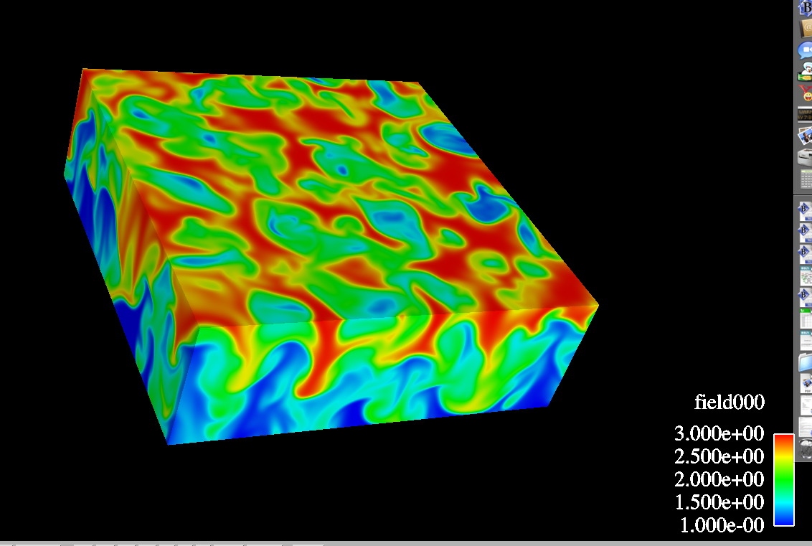

Image of a cross section of a computational fluid dynamics simulation, generated using VisIt, a sophisticated mesh visualization tool which is among an extensive set of tools which I supported, installed and maintained in my role as graphics support specialist.